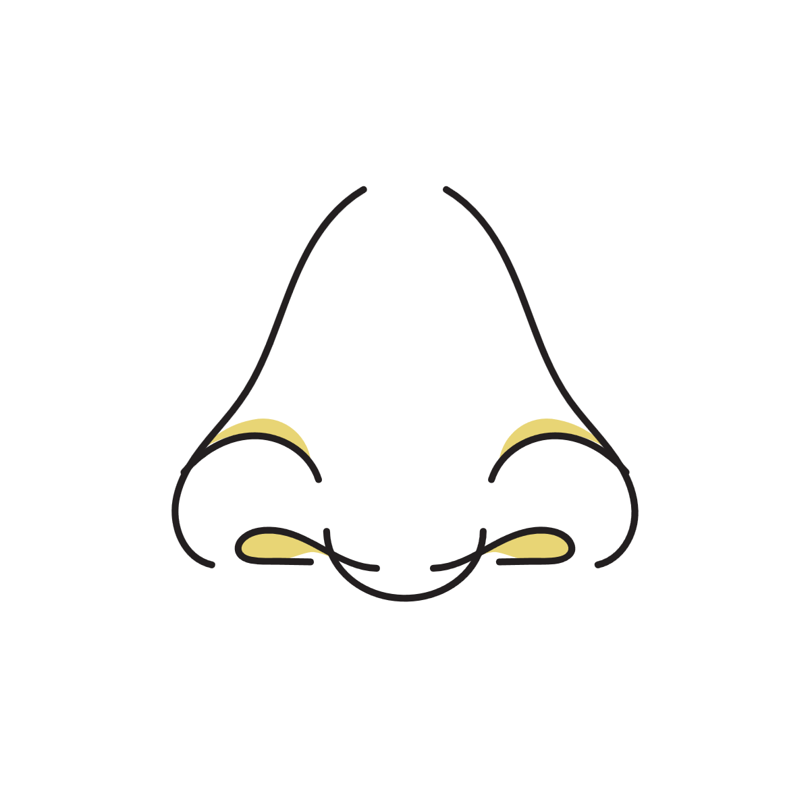

鼻がピーピー鳴るのはなぜ？
鼻で呼吸をしていると、「ピーピー」「ヒューヒュー」と笛のような音が鳴ることがあります。
自分では気づかなかったのに、静かな場所にいると急に気になったり、周りの人にも聞こえているのではないかと気になったりすることもあります。
こうした音は、鼻の中を空気が通るときに、通り道の形や状態によって空気の流れが変わることで生じます。

鼻の中を空気が通ると、なぜ音が鳴るのか
鼻の中は、単純な一本の管ではありません。左右に分かれた空間の中に、粘膜で覆われた複雑な形の構造があります。
そこを呼吸によって空気が通るとき、通り道の狭い部分や形の変化した部分では、空気の流れも変わります。
この変化がある条件になると、空気の流れが周期的に変化し、笛のような音として聞こえることがあります。
口笛でも、狭いところを通る空気の流れによって音が生まれます。鼻のピーピーという音も、それに似た現象として考えることができます。
そのため、音が鳴るかどうかは、単純に「鼻が詰まっているかどうか」だけでは決まりません。鼻の中の形や空気の通り方の違いによって、同じように呼吸していても音が出る人と出ない人がいます。
普段は鳴らないのに、突然鳴ることがあるのはなぜ？
鼻の中の状態は、いつも完全に同じではありません。
鼻水が少し増えたり、粘膜が腫れたり、乾燥したりすると、空気の通り道がわずかに変化します。すると、それまでは音が出なかった空気の流れが、音の出やすい状態になることがあります。
反対に、姿勢や呼吸の仕方が変わるだけで、音が弱くなったり消えたりすることもあります。
つまり、鼻のピーピー音は「鼻の形」という一度決まった条件だけで決まるものではなく、そのときの鼻の状態や空気の流れとの組み合わせで変わります。
乾燥したときに音が出やすいと感じる人がいるのも、こうした鼻の中の状態の変化が関係している可能性があります。
鼻が鳴るだけでも、耳鼻科で診てもらっていい？
鼻の音そのものは、必ずしも病気を意味するわけではありません。
一時的に音がするだけで、ほかに気になる症状がなければ、鼻の形やそのときの空気の流れによって音が出ていることもあります。
一方で、以前は鳴らなかったのに急に鳴るようになった、音が続くようになった、鼻づまりや痛み、鼻血などもある、といった場合は、鼻の中に何らかの変化が起きている可能性があります。
特に、鼻の中の壁である鼻中隔に穴が開く「鼻中隔穿孔」では、鼻の乾燥やかさぶた、鼻血などとともに、呼吸時のwhistling（笛のような音）が症状として現れることがあります。
気になる症状が続いている場合は、耳鼻科で鼻の中を確認してもらうと、音の原因になっている構造や炎症などを調べることができます。
他人の鼻の音が「うるさい」と感じるとき
自分の鼻ではなく、近くにいる人の「ピーピー」という呼吸音が気になってしまうこともあります。
静かな部屋や仕事中、勉強中などでは、小さな音でも一度気になり始めると意識が向きやすくなります。
しかも鼻の音は、本人がわざと出しているものとは限りません。鼻の形や粘膜の状態、呼吸の仕方などによって自然に発生していることがあります。
そのため、音が気になるときには、「本人も気づかないところで鼻の中の空気が音を出している」と考えてみると、少し受け止め方が変わるかもしれません。
どうしても気になる場所では、席を少し離したり、別の音に意識を向けたりするだけでも、音との距離を取りやすくなります。
参考情報と注意点
鼻の呼吸音には個人差があります。強い詰まり感や痛みを伴う場合は医療機関への相談も検討してください。